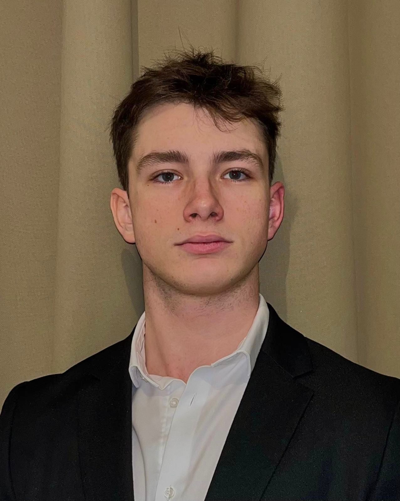

Étudiant · Curieux · Passionné
Élève de 2e année de Bachelor à Audencia Paris, je suis quelqu'un de passionné et de curieux, toujours en quête de nouvelles expériences. Amateur de cinéma, de musique et de sport, j'aime explorer des univers différents et m'inspirer de tout ce qui m'entoure.
Me contacter2023 – aujourd'hui
2e année de Bachelor au sein de l'une des meilleures écoles de commerce en France. Formation généraliste orientée management, stratégie et entrepreneuriat.
2023
Obtenu avec mention, ouvrant la voie vers des études supérieures en management.
Grand amateur de films, des classiques aux productions indépendantes. Le cinéma comme fenêtre sur le monde.
La musique comme langage universel. Des playlists pour chaque moment, chaque humeur, chaque saison.
Le sport comme discipline de vie. Dépassement de soi, régularité et esprit d'équipe au quotidien.